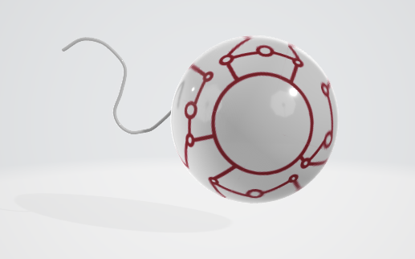
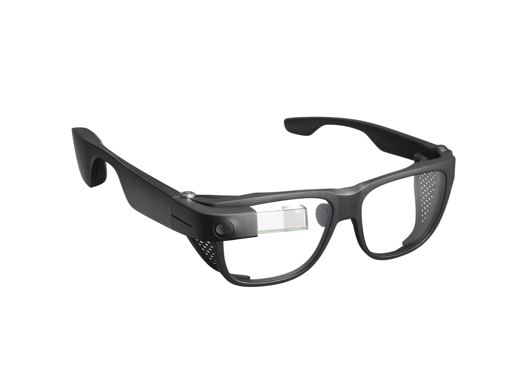

Introducing Vision, the cutting-edge product that revolutionizes the way you interact with the world through the power of artificial intelligence. Vision comes in two versatile options: a state-of-the-art nano chip implant and a pair of sleek, intelligent glasses. Both versions are designed to provide you with real-time assistance in a variety of scenarios, ensuring that you are always at your best, whether you're solving complex problems or simply navigating your daily life.
The Vision nano chip is an advanced brain and eye implant that seamlessly integrates with your neural and visual systems. This tiny yet powerful device acts as your personal AI assistant, enhancing your cognitive and sensory abilities. With the nano chip, you can experience an unprecedented level of interaction with your environment. For instance, it can improve your reaction time by processing information faster than your natural senses, alerting you to potential hazards or opportunities in your surroundings. If you look at an unfamiliar object, the chip instantly identifies it and provides you with relevant information, enriching your understanding and situational awareness. Additionally, the nano chip excels at memory assistance; it can recall details you might have forgotten, solve complex math problems on the fly, and offer insightful suggestions to aid your decision-making process. The nano chip communicates directly with your brain, allowing for a discreet and seamless user experience that keeps your focus sharp and your hands free.
For those seeking a more accessible and economical option, Vision also offers intelligent glasses that pack powerful AI capabilities into a stylish, wearable form. These glasses are equipped with high-definition cameras and tiny speakers that deliver auditory feedback. While the glasses provide the same essential features as the nano chip, such as object recognition, information retrieval, and problem-solving assistance, they do so in a way that others around you can hear. This can be particularly useful in collaborative settings or when sharing information with a group. The Vision glasses are designed for ease of use, making them perfect for users who prefer a non-invasive alternative while still benefiting from the cutting-edge AI support that Vision provides.
